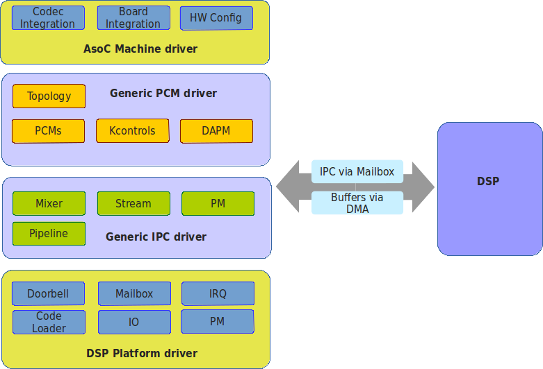

Introduction to the SOF Project¶
Sound Open Firmware (SOF) is an open source audio Data Signal Processing (DSP) firmware infrastructure and SDK that offers a single code base for all Intel hardware platforms. SOF provides infrastructure, real-time control pieces, and audio drivers as a community project.
The firmware and SDK are intended for developers who are interested in audio or signal processing on modern DSPs or who are interested in microkernels that run on small but powerful processors.
SOF currently targets the Cadence xtensa architecture DSPs found on some Intel-based devices such as the MinnowBoard MAX. Sound Open Firmware is modular and generic so it can be ported to other DSP architectures or host platforms.
Components¶
The Sound Open Firmware SDK comprises of five source components:
- SOF source code. The firmware is written in C with some architecture-specific assembler; it does not link to external dependencies.
- SOF tools. These tools are required to convert firmware from the ELF file format to formats understood by the kernel drivers and tools to assist with debugging running firmware images.
- ASoC Linux kernel drivers. An ASoC kernel driver is required to register the DSP and firmware as a kernel audio device and to expose PCMs, kcontrols etc. This driver can also load any topology data.
- Crosstool-NG toolchain. Crosstool-NG is used to build a GNU cross toolchain (gcc, gdb, binutils, etc.) that is used to build the firmware binaries. Other compilers and toolchains can also be used to build the firmware.
- Qemu DSP and host emulator. Qemu is used to provide a functional emulator to simultaneously trace and debug driver and DSP firmware code.
SOF Architecture¶
The diagram below shows the high-level firmware architecture with the Baytrail platform integration. The firmware is divided into four main sections:
Generic microkernel. The microkernel manages and abstracts the DSP hardware for the rest of the system. It also exports C APIs for memory allocation, scheduling work, event notifications, and power management.
Audio components. The audio components can be used to form an audio processing pipeline from the host DMA buffer to the DSP digital audio interface. Audio components will have a source and sink buffer where they will usually transform or route audio data as part of their processing.
Audio task. The audio task manages the audio pipelines at run time; it manages the transportation of data from source to sink component within the pipeline. The pipelines are currently statically defined in the firmware, but infrastructure is now in place to allow the dynamic creation of pipelines from Linux userspace.
Platform drivers. The platform drivers are used to control any external IP to the DSP IP. This will usually be things like DMA engines or DAI (Digital Audio Interface) controllers. These drivers are used by the audio components and pipelines to send/receive data to/from the host and external codecs.
{kind=link}
SOF Driver Architecture¶
The ASoC driver architecture for Sound Open Firmware is shown in the diagram below. The driver architecture is also split into four layers, like a protocol stack, each with a different purpose.
Machine driver. The ASoC machine driver does all the machine/board audio hardware integration. It also glues the platform driver and drivers for any codec(s) together so they appear as a single ALSA sound card. Sound Open Firmware can reuse existing upstream machine drivers (as only the platform name needs to be changed) or can have bespoke machine drivers.
Generic PCM Driver. The PCM driver creates ALSA PCMs, DAPM, and kcontrols based on the topology data loaded at run time. The PCM driver also allocates buffers for DMA and registers with run time PM. It is architecture and platform generic code.
Generic IPC driver. The IPC driver is the messaging bridge between the host and DSP and defines the messaging ABI and protocol. It is architecture and platform generic code.
DSP Platform Driver. The platform driver is a platform specific driver that abstracts the low level platform DSP hardware into a common generic API that is used by the upper layers. This includes code that will initialize the DSP and boot the firmware.
Figure 2 Sound Open Firmware Driver Architecture
{kind=link}
The right-hand side of the diagram shows the mailbox/doorbell mechanism and the DSP.
The PCM and IPC drivers can be reused without modification on every platform. The platform differentiation will occur via the topology data and firmware. There is also scope for differentiation via the machine driver and platform driver. The ACPI or Device Tree could be used to specify the HW configuration.
FAQ¶
- What license does the firmware and SDK use?
- The firmware is released using a standard BSD license with some parts MIT. The SDK is GPL.
- Do I need to open source my firmware code changes?
- No. The firmware BSD and MIT licensed code means you can keep code changes private. Patches are always welcomed if do decide to open source work.
- What DSP architectures are supported?
- Sound Open Firmware currently supports the Cadence/Tensilica Xtensa audio DSP architecture and ISA.
- What host platforms are supported?
Sound Open Firmware currently supports the Intel Baytrail and Cherrytrail based platforms. This includes devices like the MinnowBoard MAX and the ASUS T100 laptop, but should also include any Baytrail or Cherrytrail based devices that have the audio DSP enabled in the BIOS.
The code has also been designed to easily port to other host platform architectures like ARM, MIPS etc.
- How can I get involved?
- Please join the developer mailing where new development features and patches are discussed: http://alsa-project.org/mailman/listinfo/sound-open-firmware
- What is the development model?
- Sound Open Firmware has a similar development model to the Linux kernel. Patches are discussed and posted on the mailing list before being merged. The release cadence will likely be every 6 - 8 weeks. There will be a stable release tagged after passing QA then development will continue for the next release.
- Who is working on Sound Open Firmware?
- Currently Intel is sponsoring development work on the MinnowBoard MAX and other Intel-based platforms.
- How do I add support for DSP architecture X?
It’s straightforward enough to add support for a new DSP architecture. New architectures usually requires support in the GNU tool chain, although other tool chains can be used, too. It also helps to have qemu support for the architecture in order to provide an emulator.
The main work in adding the new architecture is duplicating and porting the src/arch directory to your new architecture. The code in the architecture directory mainly deals with architecture abstraction and initialization of any architecture IP like MMU, IRQs and caches alongside providing optimized version of common C functions (memcpy, memset, etc) for that architecture. Adding a new architecture also usually means adding a new host platform too.
- How do I add support for host platform X?
- Adding a new host platform is a lot simpler than adding a new DSP architecture. A new host platform consists of adding a new src/platform/ directory, together with mappings for memory, IRQs, GPIOs and peripheral devices in the DSP memory space. New drivers may also have to be added (e.g. for DMA, I2S) to the drivers directory.
- How do I port to other OSes?
There is nothing stopping the firmware working with non Linux based OSes providing a driver exists or can be written for that OS. The main area for potential optimization in porting to another OS is aligning the IPC (Inter processor Communication) mechanism to the audio driver flow for that OS. Sound Open Firmware has IPC optimized for the ALSA driver flow, but it’s easy enough to reuse this IPC on other OSes or add a completely new IPC for the OS of your choice. The IPC ABI is defined in src/include/uapi/ and the IPC IO logic lives in src/ipc/.
The current upstream IPC uses a memory mapped doorbell and mailbox to pass messages between the host and DSP. Non memory mapped IO (like I2C) can also be supported by adding new doorbell and mailbox driver in your platform code.
- What audio components are supported?
- Firmware currently supports mixers, volume, DAIs and Host PCMs in the upstream code base. More components are in progress…
- How do I create my own pipelines?
The current upstream supports creating statically defined pipelines in src/audio/static-pipeline.c. This default pipeline can be changed in this file and in the driver to match any new pipeline topology.
Dynamic pipeline topology will be supported upstream soon. This will allow pipelines to be defined at run time in the firmware and driver by using the alsa topology framework.
- Can I add my own media encoder/decoders?
- Yes.
- Can I add non-audio functions?
- Yes, the instruction sets used by DSPs are also good at non audio processing tasks too. e.g. low power sensor signal processing. Providing your DSP has physical IO ports to connect other non audio devices then it’s possible to process data from these devices too.